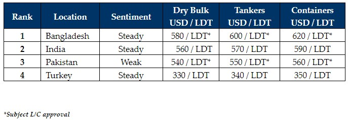

inWeekly Demolition Reports02/05/2023

Several sales have taken place into India for HKC restricted yards / green recycling only,as end Buyers seek to fill empty recycling plots, especially after a quieter period during Ramadan / Eid holidays across the sub-continent & Turkey, when minimal-to-no deals were concluded at the various destinations.
As the holiday period concludes, ever optimistic industry players are still hopeful that they may see an increase in the number of recycling candidates, as demand in Bangladesh, India, and even Turkey, ramps up again.
Notwithstanding, rates have taken somewhat of a battering off the back of declining steel plate prices & volatile currencies, and as stated in last week’s edition of the GMS WEEKLY, it is becoming increasingly difficulty to get vessels delivered into Bangladesh and Pakistan, with all parties waiting on Central Bank approvals for Letters of Credit (L/Cs) to open.
Indeed, Sellers and Cash Buyers should budget for at least two tides to get vessels delivered, particularly for larger LDT & large U.S. Dollar value vessels, where these approvals are taking longer than expected to come through.
On the other end of the sub-continent, Pakistan remains largely absent from the buying due to unworkable bank limits / restrictions on the expenditure of dwindling U.S. Dollar reserves, in addition to uncompetitive pricing on units that has subsequently placed them a long way at the bottom of the sub-continent demo rankings.
At the far end, Turkey remains worse on the fundamentals front of than last week, as their dithering numbers place an incredible downward pressure on vessel prices.
Overall, due to an uptick in both dry bulk and container charter rates at the start of this year, there has been a relative slowdown in the number of available recycling candidates. However, we have witnessed a slight increase in the inflow of (HKC) tonnage over these last couple of weeks as markets level off, and India has been the chief beneficiary of this over these units.
For week 17 of 2023, GMS demo rankings / pricing for the week are as below.

📄 Download PDF: Ship-recycling-market-insight-week-17-2023-HKC-Sales.pdfSource: GMS,Inc. ,https://www.gmsinc.net/gms_new/index.php/web